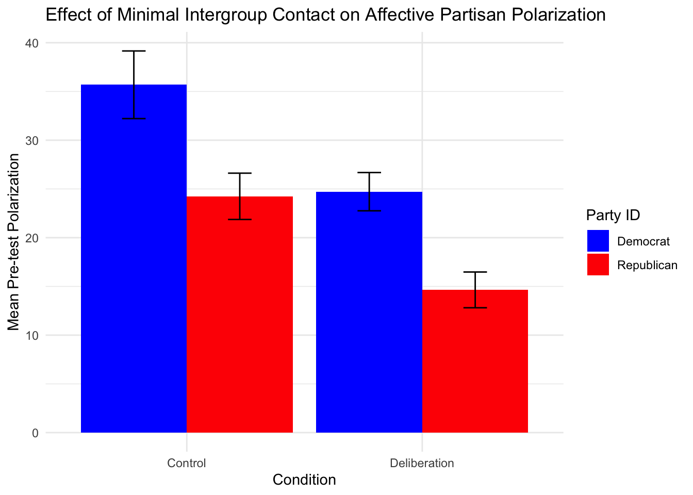

Project 2: A Somewhat Complicated Case of Wide-to-Long
My goal in this project is to use R to take the dataset you see below (with 17 variables, none of them called polarization) and transform it into a dataset that I can use to make the graph you see (further) below, of which polarization is the dependent variable. That’s my graph from Portfolio Project 1, and I did all the necessary data restructuring stuff in SPSS in order to make it. The goal of this project is to challenge myself to learn how to do it in R.
library(tidyverse)
library(haven)
long_data <- read_sav("data/LongData copy.sav")
wide_data <- read_sav("data/V.3 CLEANED DATA copy.sav")
glimpse(wide_data)## Rows: 100
## Columns: 17
## $ group <dbl> 1206, 1206, 1206, 1206, 1206, 1206, 1207, 1207, 1207, 120…
## $ participant <dbl> 1, 2, 3, 4, 5, 6, 7, 8, 9, 10, 11, 12, 13, 14, 15, 16, 17…
## $ delib <dbl+lbl> 1, 1, 1, 1, 1, 1, 1, 1, 1, 1, 1, 1, 1, 1, 1, 1, 1, 1,…
## $ seating <dbl+lbl> 1, 1, 1, 1, 1, 1, 2, 2, 2, 2, 2, 2, 1, 1, 1, 1, 1, 1,…
## $ partyid <dbl+lbl> 1, 1, 1, 2, 1, 1, 2, 2, 1, 2, 1, 1, 2, 1, 1, 2, 2, 1,…
## $ prej_preD <dbl> 23.55556, 37.77778, 41.11111, 52.77778, 29.55556, 16.6666…
## $ prej_postD <dbl> 19.888889, 46.111111, 41.111111, 35.555556, 23.888889, 20…
## $ prej_preR <dbl> 67.88889, 70.55556, 47.44444, 43.88889, 28.88889, 71.8888…
## $ prej_postR <dbl> 75.77778, 67.22222, 42.22222, 35.55556, 25.55556, 38.1111…
## $ discr_preD <dbl> 0, 25, 50, 50, 50, 25, 50, 50, 50, 25, 50, 0, 50, 25, 25,…
## $ discr_postD <dbl> 0, 0, 25, 50, 50, 0, 50, 50, 0, 25, 0, 0, 50, 25, 25, 50,…
## $ discr_preR <dbl> 50, 75, 50, 50, 25, 25, 50, 50, 50, 25, 50, 25, 50, 75, 1…
## $ discr_postR <dbl> 50, 50, 50, 50, 50, 75, 50, 50, 50, 25, 50, 25, 50, 75, 1…
## $ stereo_preD <dbl> 12.500000, 27.083333, 31.250000, 45.833333, 29.166667, 33…
## $ stereo_postD <dbl> 31.250000, 29.166667, 12.500000, 43.750000, 16.666667, 8.…
## $ stereo_preR <dbl> 75.00000, 43.75000, 47.91667, 43.75000, 27.08333, 52.0833…
## $ stereo_postR <dbl> 54.16667, 47.91667, 31.25000, 45.83333, 18.75000, 27.5000…library(ggplot2)
library(readr)
pretest_pol_summary <- suppressMessages(read_csv("data/pretest_pol_summary.csv"))
ggplot(pretest_pol_summary, aes(x = factor(delib), y = mean_pol, fill = factor(partyid))) +
geom_bar(stat = "identity", position = "dodge") +
geom_errorbar(aes(ymin = mean_pol - se_pol,
ymax = mean_pol + se_pol),
position = position_dodge(0.9), width = 0.2) +
scale_x_discrete(labels = c("Control", "Deliberation")) +
scale_fill_manual(values = c("blue", "red"), labels = c("Democrat", "Republican")) +
labs(x = "Condition", y = "Mean Pre-test Polarization", fill = "Party ID") +
ggtitle("Effect of Minimal Intergroup Contact on Affective Partisan Polarization") +
theme_minimal()
“Before and After” Datasets: A Glimpse of the Goal
First, check out the “Before” dataset again above (named wide_data). It has 100 observations (each representing a participant) with scores on 17 variables. The names of many of those variables (e.g., prej_preD, discr_postR, and stereo_postD) denote the kind of attitude that was measured (prejudicial, discriminatory, or stereotype), when it was measured (pretest or posttest; before and after a deliberation exericise where participants discussed political topics), and the target of the attitude (Democrats or Republicans).
Then, check out the “After” dataset below (named long_data). It has 400 observations (4 observations per 100 participants) of only 7 variables. It combines the different attitude variables into one variable called bias and indexes bias according to scores on time and target variables. It also includes the variable I most care about, polarization, which is essentially the distance between participants’ attitudes towards their own party and their attitudes towards the other party (which is why, as you might notice by the repeating polarization values displayed in the glimpse below, within participants, polarization scores only vary by time and not target).
glimpse(long_data)## Rows: 400
## Columns: 7
## $ participant <dbl> 1, 1, 1, 1, 2, 2, 2, 2, 3, 3, 3, 3, 4, 4, 4, 4, 5, 5, 5, …
## $ delib <dbl+lbl> 1, 1, 1, 1, 1, 1, 1, 1, 1, 1, 1, 1, 1, 1, 1, 1, 1, 1,…
## $ partyid <dbl+lbl> 1, 1, 1, 1, 1, 1, 1, 1, 1, 1, 1, 1, 2, 2, 2, 2, 1, 1,…
## $ target <dbl+lbl> 1, 2, 1, 2, 1, 2, 1, 2, 1, 2, 1, 2, 1, 2, 1, 2, 1, 2,…
## $ time <dbl+lbl> 1, 1, 2, 2, 1, 1, 2, 2, 1, 1, 2, 2, 1, 1, 2, 2, 1, 1,…
## $ bias <dbl> 12.01852, 64.29630, 17.04630, 59.98148, 29.95370, 63.1018…
## $ polarization <dbl> 52.2777778, 52.2777778, 42.9351852, 42.9351852, 33.148148…This is the strucutre and these the variables that I needed to make the graphs and the comparisons that I wanted to make with my data (including the graph from Project 1). I achieved this beautiful transformation in SPSS, but in this project I’m going to try to apply what I’ve learned so far and do it in R.
Combining Attitude Variables into One Bias Variable while Retaining Information about Time and Target
First, I’m going to use mutate( ) to create four bias variables (one for each time and target combination) by taking the mean of the appropriate attitude variables (e.g., prej_preD, discr_preD, and stereo_preD get averaged to create a bias_preD variable). This takes information from 12 variables and shoves it into only 4 variables. Then I’ll use select( ) to remove the variables that I no longer need or am uninterested in. See the results below.
wide_data <- wide_data %>%
mutate(
bias_preD = rowMeans(across(c(prej_preD, discr_preD, stereo_preD)), na.rm = TRUE),
bias_postD = rowMeans(across(c(prej_postD, discr_postD, stereo_postD)), na.rm = TRUE),
bias_preR = rowMeans(across(c(prej_preR, discr_preR, stereo_preR)), na.rm = TRUE),
bias_postR = rowMeans(across(c(prej_postR, discr_postR, stereo_postR)), na.rm = TRUE)
) %>%
select(-group, -seating, -prej_preD, -discr_preD, -stereo_preD, -prej_postD,
-discr_postD, -stereo_postD, -prej_preR, -discr_preR, -stereo_preR,
-prej_postR, -discr_postR, -stereo_postR)
#Thanks to ChatGPT for recommending the rowMeans function and the bit to remove missing values. I would have done it in a slightly different, inferior way (adding variables and dividing by 3 and not acounting for missing values). And thanks to Claude.ai for recommending the across() function (instead of the select() function recommended by Chat——I just like this version better aesthetically).
wide_data## # A tibble: 100 × 7
## participant delib partyid bias_preD bias_postD bias_preR bias_postR
## <dbl> <dbl+lbl> <dbl+l> <dbl> <dbl> <dbl> <dbl>
## 1 1 1 [deliberatio… 1 [Dem… 12.0 17.0 64.3 60.0
## 2 2 1 [deliberatio… 1 [Dem… 30.0 25.1 63.1 55.0
## 3 3 1 [deliberatio… 1 [Dem… 40.8 26.2 48.5 41.2
## 4 4 1 [deliberatio… 2 [Rep… 49.5 43.1 45.9 43.8
## 5 5 1 [deliberatio… 1 [Dem… 36.2 30.2 27.0 31.4
## 6 6 1 [deliberatio… 1 [Dem… 25 9.63 49.7 46.9
## 7 7 1 [deliberatio… 2 [Rep… 44.8 48.7 40.9 41.3
## 8 8 1 [deliberatio… 2 [Rep… 49.4 51.5 48.5 43.1
## 9 9 1 [deliberatio… 1 [Dem… 41.9 5.69 49.9 34.5
## 10 10 1 [deliberatio… 2 [Rep… 49.0 47.8 31.4 29.1
## # ℹ 90 more rowsNote on interpreting bias scores: A scores of 0 represents a maximally positive attitude, 50 represents a neutral attitude, and 100 represents a maximally negative atttitude. For example, a Democrat, who, at pretest, maximully loves her own party and maximally hates Republicans would have scores of bias_preD = 0 and bias_preR = 100.
Now I have a pretty tidy dataset with 100 observations of only 7 variables.
However, we really want scores on four of those variables (bias_preD, bias_postD, bias_preR, and bias_postR) to become scores on one variable (bias) and to be indexed (I don’t know if ‘indexed’ is the appropriate terminology for what I’m referring to, but hopefuly it captures my meaning) by scores on additional variables, time and target. Information about time and target is contained within the current variables names. I have to figure out how to get that information out of the variable names and into scores on two new variables while getting all the bias scores into one bias column.
After some trial and error, I’ve discovered that the following method seems to work (though there may be more efficient ways). Below I use a combination of the pivot_longer( ) function and the separate( ) function to transform the dataset you see above into the one you see below.
long_data <- wide_data %>%
pivot_longer(cols = 4:7, names_to = "time_target", values_to = "bias") %>%
mutate(time_target = recode(time_target,
"bias_preD" = "1/1",
"bias_postD" = "2/1",
"bias_preR" = "1/2",
"bias_postR" = "2/2"))
long_data <- long_data %>%
separate(time_target, sep = "/", into = c("time", "target")) %>%
arrange(participant, time, target)
long_data## # A tibble: 400 × 6
## participant delib partyid time target bias
## <dbl> <dbl+lbl> <dbl+lbl> <chr> <chr> <dbl>
## 1 1 1 [deliberation] 1 [Democrats] 1 1 12.0
## 2 1 1 [deliberation] 1 [Democrats] 1 2 64.3
## 3 1 1 [deliberation] 1 [Democrats] 2 1 17.0
## 4 1 1 [deliberation] 1 [Democrats] 2 2 60.0
## 5 2 1 [deliberation] 1 [Democrats] 1 1 30.0
## 6 2 1 [deliberation] 1 [Democrats] 1 2 63.1
## 7 2 1 [deliberation] 1 [Democrats] 2 1 25.1
## 8 2 1 [deliberation] 1 [Democrats] 2 2 55.0
## 9 3 1 [deliberation] 1 [Democrats] 1 1 40.8
## 10 3 1 [deliberation] 1 [Democrats] 1 2 48.5
## # ℹ 390 more rows### Thanks to posit's "data tidying with tidyr cheatsheet" for help with the pivot_longer( ) and separate( ) functions.Now we’ve got target, time, and bias variables—but not yet the one variable I really care about.
Creating Polarization Variable
Now I want to create the polarization variable, and I want it to represent the distance between participants’ in-group and out-group attitudes. I can do this by taking the absolute values of the difference of bias scores according to target. But first, I have to restructure the data from long to wide again using the pivot_wider( ) function to get bias scores towards different targets into two separate columns.
long_data <- long_data %>%
pivot_wider(names_from = target,
values_from = bias,
names_prefix = "bias_target_")
long_data## # A tibble: 200 × 6
## participant delib partyid time bias_target_1 bias_target_2
## <dbl> <dbl+lbl> <dbl+lbl> <chr> <dbl> <dbl>
## 1 1 1 [deliberation] 1 [Democrats] 1 12.0 64.3
## 2 1 1 [deliberation] 1 [Democrats] 2 17.0 60.0
## 3 2 1 [deliberation] 1 [Democrats] 1 30.0 63.1
## 4 2 1 [deliberation] 1 [Democrats] 2 25.1 55.0
## 5 3 1 [deliberation] 1 [Democrats] 1 40.8 48.5
## 6 3 1 [deliberation] 1 [Democrats] 2 26.2 41.2
## 7 4 1 [deliberation] 2 [Republican… 1 49.5 45.9
## 8 4 1 [deliberation] 2 [Republican… 2 43.1 43.8
## 9 5 1 [deliberation] 1 [Democrats] 1 36.2 27.0
## 10 5 1 [deliberation] 1 [Democrats] 2 30.2 31.4
## # ℹ 190 more rowsNow, that bias towards Democrats (bias_target_1) and bias towards Republicans (bias_target_2) are in two separate columns, I’ll create the polarization variable using the mutate( ) function.
long_data <- long_data %>%
mutate(polarization = abs(bias_target_1 - bias_target_2))
long_data## # A tibble: 200 × 7
## participant delib partyid time bias_target_1 bias_target_2 polarization
## <dbl> <dbl+lbl> <dbl+l> <chr> <dbl> <dbl> <dbl>
## 1 1 1 [delibe… 1 [Dem… 1 12.0 64.3 52.3
## 2 1 1 [delibe… 1 [Dem… 2 17.0 60.0 42.9
## 3 2 1 [delibe… 1 [Dem… 1 30.0 63.1 33.1
## 4 2 1 [delibe… 1 [Dem… 2 25.1 55.0 30.0
## 5 3 1 [delibe… 1 [Dem… 1 40.8 48.5 7.67
## 6 3 1 [delibe… 1 [Dem… 2 26.2 41.2 15.0
## 7 4 1 [delibe… 2 [Rep… 1 49.5 45.9 3.66
## 8 4 1 [delibe… 2 [Rep… 2 43.1 43.8 0.694
## 9 5 1 [delibe… 1 [Dem… 1 36.2 27.0 9.25
## 10 5 1 [delibe… 1 [Dem… 2 30.2 31.4 1.25
## # ℹ 190 more rowsNow, that I finally have the polarization variable, I’ll use the pivot_longer( ) function one more time to restore our bias and target variables and use the select( ) function to order the variables the way I want them.
long_data <- long_data %>%
pivot_longer(cols = 5:6, names_to = "target", values_to = "bias") %>%
mutate(target = recode(target,
"bias_target_1" = 1,
"bias_target_2" = 2)) %>%
select(participant, delib, partyid, time, target, bias, polarization)
long_data## # A tibble: 400 × 7
## participant delib partyid time target bias polarization
## <dbl> <dbl+lbl> <dbl+lbl> <chr> <dbl> <dbl> <dbl>
## 1 1 1 [deliberation] 1 [Democrats] 1 1 12.0 52.3
## 2 1 1 [deliberation] 1 [Democrats] 1 2 64.3 52.3
## 3 1 1 [deliberation] 1 [Democrats] 2 1 17.0 42.9
## 4 1 1 [deliberation] 1 [Democrats] 2 2 60.0 42.9
## 5 2 1 [deliberation] 1 [Democrats] 1 1 30.0 33.1
## 6 2 1 [deliberation] 1 [Democrats] 1 2 63.1 33.1
## 7 2 1 [deliberation] 1 [Democrats] 2 1 25.1 30.0
## 8 2 1 [deliberation] 1 [Democrats] 2 2 55.0 30.0
## 9 3 1 [deliberation] 1 [Democrats] 1 1 40.8 7.67
## 10 3 1 [deliberation] 1 [Democrats] 1 2 48.5 7.67
## # ℹ 390 more rows### Thanks Claude.ai for helping me figure out to recode the target variables.Viola! There you have it: The beautifully simple dataset that should allow me to make all the graphs my heart desires, all the graphs I can imagine to milk this data of all its insight.
Testing the Results
To make sure it’s the same as the “After” dataset that we glimpsed at the beginning of this project, I’ll now use the same code I used to make the graph up top. The code acts on the long_data dataset (using it to create a pretest_pol_summary dataset), which, after my first pivot_longer( ) function above, ceased to be the original long_data and became the new done-completely-with-R long_data).
Without further adieu:
pretest_pol_summary <- long_data %>%
filter(time == 1) %>%
group_by(delib, partyid) %>%
summarise(
mean_pol = mean(polarization, na.rm = TRUE),
se_pol = sd(polarization, na.rm = TRUE) / sqrt(n()),
n = n()
)## `summarise()` has grouped output by 'delib'. You can override using the
## `.groups` argument.ggplot(pretest_pol_summary, aes(x = factor(delib), y = mean_pol, fill = factor(partyid))) +
geom_bar(stat = "identity", position = "dodge") +
geom_errorbar(aes(ymin = mean_pol - se_pol,
ymax = mean_pol + se_pol),
position = position_dodge(0.9), width = 0.2) +
scale_x_discrete(labels = c("Control", "Deliberation")) +
scale_fill_manual(values = c("blue", "red"), labels = c("Democrat", "Republican")) +
labs(x = "Condition", y = "Mean Pre-test Polarization", fill = "Party ID") +
ggtitle("Effect of Minimal Intergroup Contact on Affective Partisan Polarization") +
theme_minimal()
SUCCESS!!
This one graph is only the tip of the iceberg (a small iceberg) of what I can explore with this dataset structured in this way. More graphs are to come in the next project!